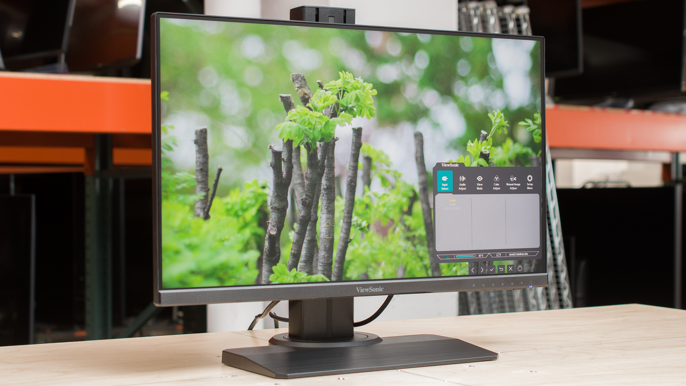
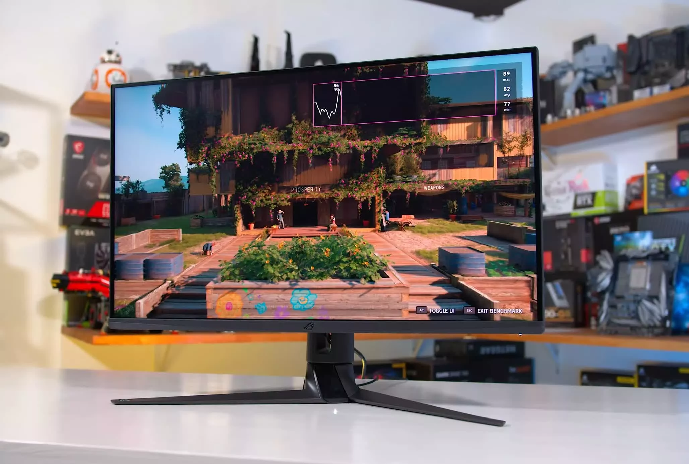

monitors come in different reselutions,displays, refresh rates and responce time wich is called latency
desktop monitors have 3 reselutions 1080p,1080p ultrawide,1440p,1440p ultrawide,4k and 4k ultrawide
1080p monitors usualy have higher refresh rates becouse they are easier to run,1080p ultrawides are the same but they are bigger and have more pixels
I have a 1080p ultrawide monitor

1440p monitors have beautiful displays and good refresh rates,1440p ultrawides are big and too much for most people but they are still good
4K monitors are very expensive and most sistems cant handle it but some can with the latest components they come in less refresh rate choises but have beautiful displays
4k ultrawides are even more expensive and not worth it at all for the product your getting, it is worth more to buy a 1440p 32 inch or 1440p 27inch with high refresh rate
refresh rates and responde times are a little bit similar responde times are time diffrence betwen you clicking your mouse and the action coming on the screen this is called
latency and you dont want high letency and refresh rates are mesured in hz like i have a 165hz monitor and its great but 180hz is the sweet spot but it costs more
the higher end monitors have like crazy amounts of hz like 540hz and 240hz even 360hz.when buying a monitor look for 1ms response time
the displays are a important part of a monitor so there is Ips,Va,Tn and oled,Tn panels have really good refresh rates,Va panels have good viewing angles and Ips is
somthing in betwen but Oleds are on a another level they are so good in color sharpnes and refresh rates like we are talking oled,240hz,1ms responce time its really good